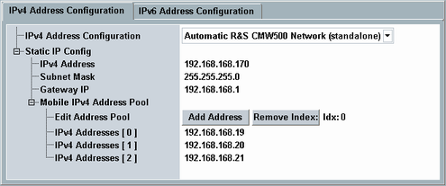

To modify the IPv4 configuration, press the "Config" hotkey and select the tab "IPv4 Address Configuration".
The available settings are described below. For additional information, see "IP Address Configuration Methods".

Selects the method to be used for IPv4 address configuration.
- "Automatic R&S CMW500 Network (standalone)"
Select this value for a standalone test setup. As a consequence the predefined automatic IP configuration is used. - "Static IP config"
Select this value for a test setup with connected external network and static IP addresses.
For configuration of the static IP configuration, see "Static IP config". - "DHCPv4 from LAN (LAN DAU)"
Select this value for a test setup with connected external network and dynamic IP address assignment via DHCPv4.
The following parameters specify the static IP configuration to be used if "Static IP config" is selected for "IPv4 Address Configuration".
Assign a static IPv4 address and subnet mask to the LAN DAU Ethernet adapter.
Remote command:If you want to test public services on the Internet, specify the IP address of the gateway connecting the external network to the Internet.
Remote command:Specifies the IP address pool for DUTs. An address is assigned to the DUT upon request. A single DUT can request several addresses and thus need several entries.
- Edit existing entries directly in the dialog.
- To add an entry to the end of the list, press the "Add Address" button, then edit the new entry.
- To delete a specific entry, select the number of the entry via parameter "Idx:" and press the "Remove Index" button.